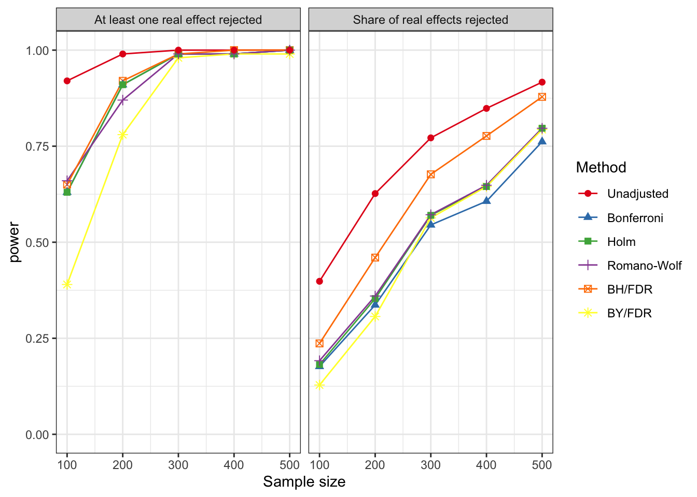
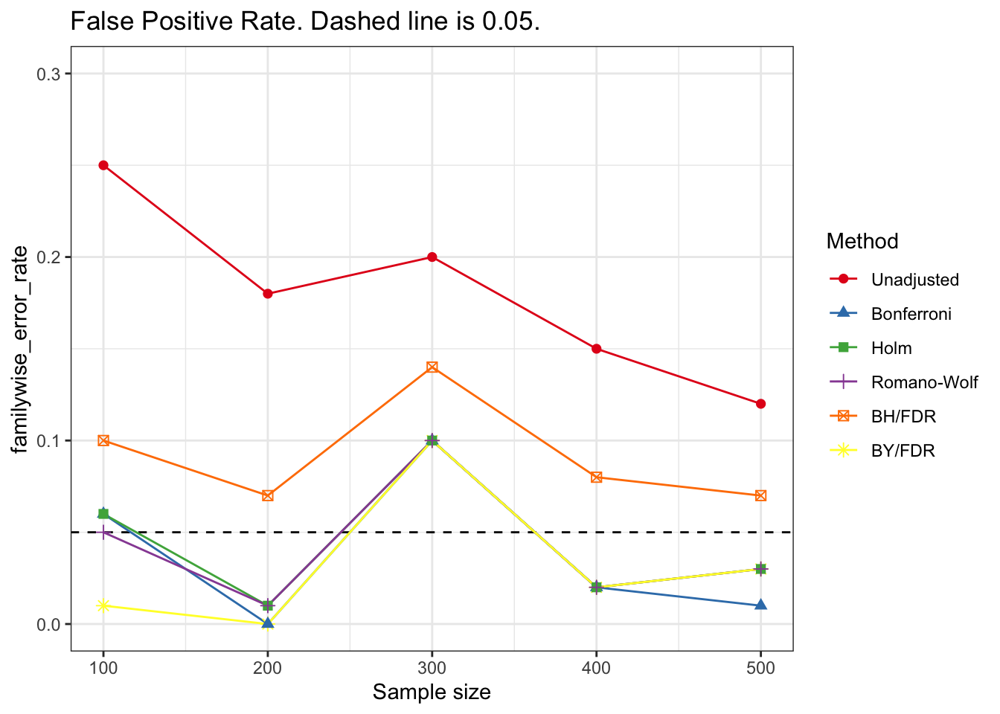
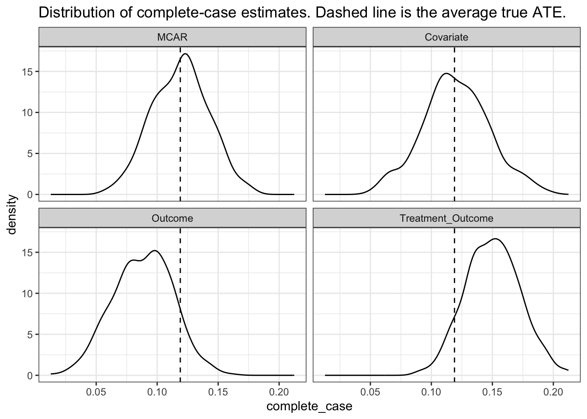
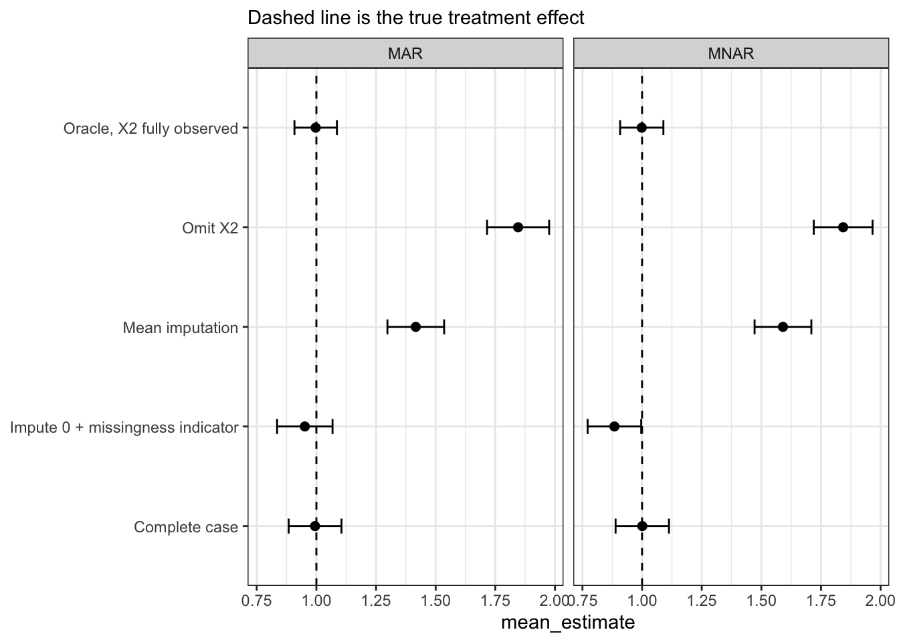
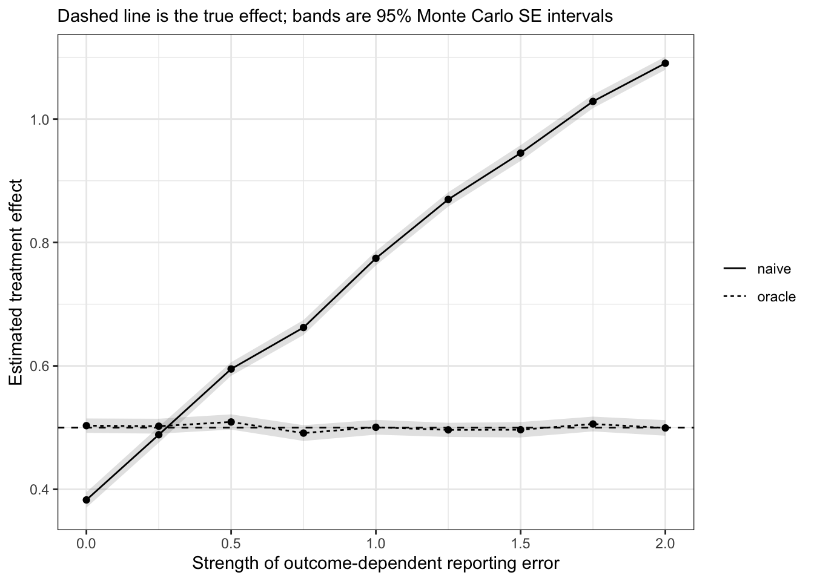

library(tidyverse)
library(ggplot2)
library(fixest)
library(RColorBrewer)
library(kableExtra)
# devtools::install_github("s3alfisc/wildrwolf")
library(wildrwolf)
set.seed(1234)
simulate_10_outcomes <- function(N, seed = NULL) {
if (!is.null(seed)) set.seed(seed)
D <- rbinom(N, 1, 0.5)
g <- rnorm(N)
m <- rnorm(N)
v <- rnorm(N)
eps <- matrix(rnorm(N * 10), nrow = N)
data.frame(
id = 1:N,
D = D,
# Four true nulls
Y1 = eps[, 1],
Y2 = 0.60 * g + eps[, 2],
Y3 = 0.60 * g + 0.60 * m + eps[, 3],
Y4 = 0.60 * g + 0.60 * m + eps[, 4],
# Six non-null outcomes
Y5 = 0.65 * D + 0.60 * g + 0.60 * m + eps[, 5],
Y6 = 0.55 * D + 0.60 * g + 0.60 * m + eps[, 6],
Y7 = 0.45 * D + 0.55 * g + 0.55 * v + eps[, 7],
Y8 = 0.35 * D + 0.55 * g + 0.55 * v + eps[, 8],
Y9 = 0.30 * D + 0.40 * g + eps[, 9],
Y10 = 0.25 * D + 0.40 * m + eps[, 10]
)
}
dat <- simulate_10_outcomes(N=400, seed=1234)
outcomes <- paste0("Y", 1:10)Quant II
Lab 11
Today’s Agenda
- Multiple hypothesis testing
- Missing data
- Differential measurement error
- Partial identification
Multiple Testing Adjustments
- Test a family of \(M\) hypotheses in one analysis
- FWER family-wise error rate
- P(at least one false rejection) \(< \alpha\)
- FDR false discovery rate
- E[false rejections/total rejections] \(\leq q\)
- FWER control is more stringent than FDR control
FWER control methods recap
- Bonferroni:
- test each hypothesis at \(\alpha/M\), or multiply each p-value by \(M\)
- Holm:
- Step-down Bonferroni
- Controls FWER under arbitrary dependence and is at least as powerful as Bonferroni
- Romano-Wolf:
- Step-down resampling method
- Uses the joint distribution of test statistics
- Can be more powerful than Holm when outcomes are correlated.
FDR control methods Recap
- Benjamini-Hochberg:
- controls FDR under independence or positive dependence
- Benjamini-Yekutieli:
- Controls FDR under arbitrary dependence
- but pays a large power cost
A 10-outcome example
Simulate one experiment with ten outcomes
Y1toY4are true nullsY5toY10have nonzero treatment effects- Some outcomes are correlated because they share latent factors
- Some effects are very small, so the adjustment methods can disagree
Estimate the model using fixest
The c(Y1, ..., Y10) ~ D syntax estimates the same right-hand-side model for multiple outcomes.
The result is a fixest_multi object.
models <- feols(
c(Y1, Y2, Y3, Y4, Y5, Y6, Y7, Y8, Y9, Y10) ~ D,
data = dat
)
models x.1 x.2 x.3
Dependent Var.: Y1 Y2 Y3
Constant -0.0329 (0.0700) -0.0865 (0.0872) 0.0201 (0.0908)
D 0.0163 (0.0997) 0.2584* (0.1242) -0.0490 (0.1294)
_______________ ________________ ________________ ________________
S.E. type IID IID IID
Observations 400 400 400
R2 6.71e-5 0.01075 0.00036
Adj. R2 -0.00245 0.00827 -0.00215
x.4 x.5 x.6
Dependent Var.: Y4 Y5 Y6
Constant -0.0244 (0.0932) 0.0228 (0.0932) -0.0490 (0.0906)
D 0.0860 (0.1328) 0.6531*** (0.1329) 0.4819*** (0.1291)
_______________ ________________ __________________ __________________
S.E. type IID IID IID
Observations 400 400 400
R2 0.00105 0.05724 0.03384
Adj. R2 -0.00146 0.05487 0.03141
x.7 x.8 x.9
Dependent Var.: Y7 Y8 Y9
Constant 0.0020 (0.0902) -0.0365 (0.0866) -0.1037 (0.0731)
D 0.5685*** (0.1285) 0.3806** (0.1234) 0.2731** (0.1041)
_______________ __________________ _________________ _________________
S.E. type IID IID IID
Observations 400 400 400
R2 0.04686 0.02335 0.01700
Adj. R2 0.04447 0.02090 0.01453
x.10
Dependent Var.: Y10
Constant 0.0536 (0.0756)
D 0.2440* (0.1077)
_______________ ________________
S.E. type IID
Observations 400
R2 0.01274
Adj. R2 0.01026
---
Signif. codes: 0 '***' 0.001 '**' 0.01 '*' 0.05 '.' 0.1 ' ' 1models_list <- as.list(models)
names(models_list) <- outcomes
extract_fixest_result <- function(model, outcome, term = "D") {
ct <- coeftable(model)
data.frame(
outcome = outcome,
estimate = ct[term, "Estimate"],
se = ct[term, "Std. Error"],
t_stat = ct[term, "t value"],
p_raw = ct[term, "Pr(>|t|)"]
)
}
res_unadjusted <- lapply(outcomes, function(y) {
extract_fixest_result(models_list[[y]], outcome = y, term = "D")
}) %>%
bind_rows() %>%
mutate(
truth = ifelse(outcome %in% paste0("Y", 1:4), "true null", "non-null")
)
res_unadjusted %>%
mutate(across(where(is.numeric), ~ round(.x, 3))) %>%
kable(caption = "Unadjusted treatment-effect estimates from ten fixest models")| outcome | estimate | se | t_stat | p_raw | truth |
|---|---|---|---|---|---|
| Y1 | 0.016 | 0.100 | 0.163 | 0.870 | true null |
| Y2 | 0.258 | 0.124 | 2.080 | 0.038 | true null |
| Y3 | -0.049 | 0.129 | -0.379 | 0.705 | true null |
| Y4 | 0.086 | 0.133 | 0.648 | 0.518 | true null |
| Y5 | 0.653 | 0.133 | 4.916 | 0.000 | non-null |
| Y6 | 0.482 | 0.129 | 3.734 | 0.000 | non-null |
| Y7 | 0.568 | 0.129 | 4.424 | 0.000 | non-null |
| Y8 | 0.381 | 0.123 | 3.085 | 0.002 | non-null |
| Y9 | 0.273 | 0.104 | 2.624 | 0.009 | non-null |
| Y10 | 0.244 | 0.108 | 2.267 | 0.024 | non-null |
Apply p-value adjustments
# wildrwolf
# Romano-Wolf adjusted p-values
# pass the list of hypotheses/models,
rw <- rwolf(
models = models,
param = "D",
B = 999
)
|
| | 0%
|
|======= | 10%
|
|============== | 20%
|
|===================== | 30%
|
|============================ | 40%
|
|=================================== | 50%
|
|========================================== | 60%
|
|================================================= | 70%
|
|======================================================== | 80%
|
|=============================================================== | 90%
|
|======================================================================| 100%rw model Estimate Std. Error t value Pr(>|t|) RW Pr(>|t|)
1 1 0.01629908 0.0997099 0.163465 0.8702353 0.919
2 2 0.2583504 0.124202 2.080082 0.03815736 0.169
3 3 -0.04903326 0.1293746 -0.3790022 0.7048883 0.919
4 4 0.08603099 0.1328384 0.6476367 0.5175934 0.902
5 5 0.6531116 0.1328603 4.915778 1.295176e-06 0.001
6 6 0.4819294 0.1290788 3.733605 0.0002162789 0.001
7 7 0.5684876 0.1285099 4.423686 1.254023e-05 0.001
8 8 0.3806311 0.1233876 3.08484 0.002178786 0.017
9 9 0.2731424 0.1041107 2.623576 0.009035713 0.052
10 10 0.2440495 0.1076745 2.266548 0.02395394 0.129rw_df <- as.data.frame(rw)
# other adjustment methods
res_adjusted <- res_unadjusted %>%
mutate(
p_bonferroni = p.adjust(p_raw, method = "bonferroni"),
p_holm = p.adjust(p_raw, method = "holm"),
p_bh = p.adjust(p_raw, method = "BH"),
p_by = p.adjust(p_raw, method = "BY"),
p_romano_wolf = rw_df[["RW Pr(>|t|)"]]
)
res_adjusted %>%
mutate(across(where(is.numeric), ~ round(.x, 3))) %>%
kable(caption = "Raw and adjusted p-values")| outcome | estimate | se | t_stat | p_raw | truth | p_bonferroni | p_holm | p_bh | p_by | p_romano_wolf |
|---|---|---|---|---|---|---|---|---|---|---|
| Y1 | 0.016 | 0.100 | 0.163 | 0.870 | true null | 1.000 | 1.000 | 0.870 | 1.000 | 0.919 |
| Y2 | 0.258 | 0.124 | 2.080 | 0.038 | true null | 0.382 | 0.153 | 0.055 | 0.160 | 0.169 |
| Y3 | -0.049 | 0.129 | -0.379 | 0.705 | true null | 1.000 | 1.000 | 0.783 | 1.000 | 0.919 |
| Y4 | 0.086 | 0.133 | 0.648 | 0.518 | true null | 1.000 | 1.000 | 0.647 | 1.000 | 0.902 |
| Y5 | 0.653 | 0.133 | 4.916 | 0.000 | non-null | 0.000 | 0.000 | 0.000 | 0.000 | 0.001 |
| Y6 | 0.482 | 0.129 | 3.734 | 0.000 | non-null | 0.002 | 0.002 | 0.001 | 0.002 | 0.001 |
| Y7 | 0.568 | 0.129 | 4.424 | 0.000 | non-null | 0.000 | 0.000 | 0.000 | 0.000 | 0.001 |
| Y8 | 0.381 | 0.123 | 3.085 | 0.002 | non-null | 0.022 | 0.015 | 0.005 | 0.016 | 0.017 |
| Y9 | 0.273 | 0.104 | 2.624 | 0.009 | non-null | 0.090 | 0.054 | 0.018 | 0.053 | 0.052 |
| Y10 | 0.244 | 0.108 | 2.267 | 0.024 | non-null | 0.240 | 0.120 | 0.040 | 0.117 | 0.129 |
Power
N_grid <- seq(100,500,100)
S <- 100
B_rw <- 199
power_sim <- lapply(N_grid, function(N_now) {
lapply(seq_len(S), function(s) {
run_one_power_sim(
N = N_now,
sim_id = s,
B_rw = B_rw,
alpha = 0.05
)
}) %>%
bind_rows()
}) %>%
bind_rows()

Missing Data
- MCAR: in expectation the estimates are unbiased
- MAR: can use covariates that determine missingness to impute the missing values of the outcome
Missing outcome data in RCT
- Treatment is randomized
- Some people didn’t respond
- Complete-case analysis estimates the effect among respondents
- not necessarily the full sample
Complete-case estimates and Manski bounds
- Manski bounds use only bounded outcomes
- Here outcomes are in
[0, 1] - Missing treated outcomes are set to either 0 or 1
- Missing control outcomes are set to the opposite extreme
inv_logit <- function(x) 1 / (1 + exp(-x))
clip01 <- function(x) pmin(pmax(x, 0), 1)
simulate_missing_outcomes <- function(N = 5000, mechanism = "none", seed = 123) {
set.seed(seed)
X <- rnorm(N)
D <- rbinom(N, 1, 0.5)
Y0 <- clip01(0.35 + 0.18 * X + rnorm(N, 0, 0.1))
Y1 <- clip01(Y0 + 0.12 + 0.05 * X + rnorm(N, 0, 0.06))
Y <- ifelse(D == 1, Y1, Y0)
p_R <- switch(
mechanism,
none = rep(1, N),
mcar = rep(0.75, N),
covariate = inv_logit(0.5 - 0.8 * abs(X)),
outcome = inv_logit(0.5 - 3 * (Y - mean(Y))),
treatment_outcome = inv_logit(0.5 + 3 * D - 3 * (Y - mean(Y))),
stop("Unknown mechanism")
)
if (mechanism == "none") {
R <- rep(1, N)
} else {
R <- rbinom(N, 1, p_R)
}
Y_obs <- Y
Y_obs[R == 0] <- NA
data.frame(
id = 1:N,
mechanism = mechanism,
X = X,
D = D,
Y0 = Y0,
Y1 = Y1,
Y = Y,
R = R,
Y_obs = Y_obs
)
}
estimate_missing_outcomes <- function(dat) {
p1 <- mean(dat$R[dat$D == 1])
p0 <- mean(dat$R[dat$D == 0])
mu1 <- mean(dat$Y_obs[dat$D == 1], na.rm = TRUE)
mu0 <- mean(dat$Y_obs[dat$D == 0], na.rm = TRUE)
data.frame(
mechanism = unique(dat$mechanism),
true_ate = mean(dat$Y1 - dat$Y0),
complete_case = mu1 - mu0,
response_treated = p1,
response_control = p0,
manski_lower = mu1 * p1 - mu0 * p0 - (1 - p0),
manski_upper = mu1 * p1 + (1 - p1) - mu0 * p0
)
}
mechanisms <- c("none", "mcar", "covariate", "outcome", "treatment_outcome")
res_missing <- lapply(mechanisms, function(m) {
simulate_missing_outcomes(mechanism = m, seed = 1234) %>%
estimate_missing_outcomes()
}) %>%
bind_rows() %>%
mutate(
bias = complete_case - true_ate
)
res_missing %>%
mutate(across(where(is.numeric), ~ round(.x, 3))) %>%
kable(caption = "Missing outcomes - same experiment, different response mechanisms")| mechanism | true_ate | complete_case | response_treated | response_control | manski_lower | manski_upper | bias |
|---|---|---|---|---|---|---|---|
| none | 0.117 | 0.117 | 1.000 | 1.000 | 0.117 | 0.117 | 0.000 |
| mcar | 0.117 | 0.119 | 0.751 | 0.753 | -0.158 | 0.338 | 0.002 |
| covariate | 0.117 | 0.112 | 0.457 | 0.467 | -0.486 | 0.591 | -0.006 |
| outcome | 0.117 | 0.082 | 0.570 | 0.657 | -0.324 | 0.449 | -0.036 |
| treatment_outcome | 0.117 | 0.149 | 0.954 | 0.657 | -0.108 | 0.282 | 0.031 |
Lee Bounds
Provide bounds on the causal effect even with unbounded outcome
Relies on monotonicity assumption similar to that used for LATE identification
But in this case it serves to solve sample selection
Treated respondent group contains
- Always responders
- Treatment-induced responders
Control respondent group contains
- Always responders
Bound for the ATE for the always responder sub-population
# devtools::install_github("vsemenova/leebounds")
# try devtools::install_github("haluong89-bcn/leebounds") if the vsemenova/leebounds doesn't work
library(leebounds)
dat_lee <- simulate_missing_outcomes(
N = 5000,
mechanism = "treatment_outcome",
seed = 1234
)
lee_input <- dat_lee %>%
transmute(
treat = D,
outcome = Y_obs,
selection = R
)
lee_raw <- leebounds(lee_input)
do.call("rbind", lee_raw) 68.83871%
lower_bound 0.01930161
upper_bound 0.27427442
p0 0.68838706
trimmed_mean_upper 0.59004332
trimmed_mean_lower 0.33507051
mean_no_trim 0.31576890
odds 1.04415372
yp0 0.58502845
y1p0 0.33785260
s0 0.65658217
s1 0.95379796
prop0 0.48920000
prop1 0.51080000Distribution of complete-case estimates with different missing mechanism

Missing data in confounders in observational studies
set.seed(1234)
sim_once <- function(n = 3000, tau = 1, missing = c("MAR", "MNAR")) {
missing <- match.arg(missing)
# two pre-treatment confounders
X1 <- rnorm(n)
X2 <- 0.6 * X1 + sqrt(1 - 0.6^2) * rnorm(n)
p_D <- plogis(-0.2 + X1 + X2)
D <- rbinom(n, 1, p_D)
Y <- tau * D + 1 * X1 + 1.5 * X2 + rnorm(n)
# Missingness in X2
# MAR: missingness depends only on observed X1.
# MNAR: missingness depends on X2 itself.
if (missing == "MAR") {
p_obs <- plogis(1 - 2 * X1)
} else {
p_obs <- plogis(1 - 2 * X2)
}
# R = 1 means X2 observed
R <- rbinom(n, 1, p_obs)
X2_obs <- ifelse(R == 1, X2, NA)
dat <- data.frame(Y, D, X1, X2, X2_obs, R)
# Estimators
# Oracle: what we would estimate if X2 were fully observed.
oracle <- coef(lm(Y ~ D + X1 + X2, data = dat))["D"]
# Naive: omit the missing confounder entirely.
omit_x2 <- coef(lm(Y ~ D + X1, data = dat))["D"]
# Complete case: use only units where X2 is observed.
complete_case <- coef(
lm(Y ~ D + X1 + X2_obs, data = dat, subset = R == 1)
)["D"]
# Mean imputation
dat$X2_mean_imp <- ifelse(is.na(X2_obs), mean(X2_obs, na.rm = TRUE), X2_obs)
mean_imp <- coef(
lm(Y ~ D + X1 + X2_mean_imp, data = dat)
)["D"]
# Missingness-indicator method with Lin (2013) fully interacted
dat$X1_c <- dat$X1 - mean(dat$X1)
dat$X2_c <- dat$X2 - mean(dat$X2)
dat$M2 <- as.integer(is.na(dat$X2_obs))
dat$X2_c[dat$M2 == 1] <- 0
mim_lin <- coef(
lm(Y ~ D * (X1_c + X2_c + M2), data = dat)
)["D"]
data.frame(
missing = missing,
estimator = c(
"Oracle, X2 fully observed",
"Omit X2",
"Complete case",
"Mean imputation",
"Impute 0 + missingness indicator"
),
estimate = c(
oracle,
omit_x2,
complete_case,
mean_imp,
mim_lin
),
true_effect = tau
)
}
# One draw
rbind(
sim_once(missing = "MAR"),
sim_once(missing = "MNAR")
) missing estimator estimate true_effect
1 MAR Oracle, X2 fully observed 0.9561143 1
2 MAR Omit X2 1.7141159 1
3 MAR Complete case 0.9399003 1
4 MAR Mean imputation 1.3296776 1
5 MAR Impute 0 + missingness indicator 0.8807087 1
6 MNAR Oracle, X2 fully observed 1.0395772 1
7 MNAR Omit X2 1.9135305 1
8 MNAR Complete case 1.0185938 1
9 MNAR Mean imputation 1.6619591 1
10 MNAR Impute 0 + missingness indicator 0.9150987 1run_mc <- function(B = 200, missing = c("MAR", "MNAR")) {
missing <- match.arg(missing)
out <- do.call(
rbind,
lapply(seq_len(B), function(b) {
res <- sim_once(missing = missing)
res$sim <- b
res
})
)
aggregate(
estimate ~ missing + estimator,
data = out,
FUN = function(x) c(mean = mean(x), sd = sd(x))
)
}
mc_mar <- run_mc(B = 200, missing = "MAR")
mc_mnar <- run_mc(B = 200, missing = "MNAR")
mc <- rbind(mc_mar, mc_mnar)
mc <- do.call(data.frame, mc)
names(mc) <- c("missing", "estimator", "mean_estimate", "sd_estimate")
mc$bias <- mc$mean_estimate - 1
mc missing estimator mean_estimate sd_estimate
1 MAR Complete case 0.9945551 0.05642798
2 MAR Impute 0 + missingness indicator 0.9515495 0.05929531
3 MAR Mean imputation 1.4166468 0.06062655
4 MAR Omit X2 1.8456029 0.06638467
5 MAR Oracle, X2 fully observed 0.9970557 0.04537899
6 MNAR Complete case 1.0008486 0.05707746
7 MNAR Impute 0 + missingness indicator 0.8840953 0.05727683
8 MNAR Mean imputation 1.5905037 0.06071641
9 MNAR Omit X2 1.8428483 0.06285899
10 MNAR Oracle, X2 fully observed 0.9985994 0.04626213
bias
1 -0.0054448728
2 -0.0484505086
3 0.4166467705
4 0.8456028647
5 -0.0029443224
6 0.0008485933
7 -0.1159047500
8 0.5905037348
9 0.8428482676
10 -0.0014006124ggplot(mc, aes(x = estimator, y = mean_estimate)) +
geom_hline(yintercept = 1, linetype = "dashed") +
geom_point(size = 2) +
geom_errorbar(
aes(
ymin = mean_estimate - 1.96 * sd_estimate,
ymax = mean_estimate + 1.96 * sd_estimate
),
width = 0.15
) +
facet_wrap(~ missing) +
coord_flip() +
labs(
x = NULL,
subtitle = "Dashed line is the true treatment effect"
) +
theme_bw()
Some recent/current work on missing data
Differential Measurment Errors
https://imai.fas.harvard.edu/research/files/merror.pdf
set.seed(1234)
sim_merror_once <- function(
n = 5000,
tau = 0.5,
gamma = 0
) {
Z_star <- rbinom(n, 1, 0.5)
Y <- tau * Z_star + rnorm(n)
# gamma = 0:
# reporting depends only on true treatment.
# This is nondifferential measurement error.
# gamma > 0: Differential measurement error.
# high-Y units are more likely to be reported as treated.
# low-Y units are more likely to be reported as control.
p_report_treated <- plogis(-2 + 4 * Z_star + gamma * Y)
Z_obs <- rbinom(n, 1, p_report_treated)
oracle <- coef(lm(Y ~ Z_star))["Z_star"]
naive <- coef(lm(Y ~ Z_obs))["Z_obs"]
data.frame(
gamma = gamma,
oracle = oracle,
naive = naive,
true_effect = tau,
bias_naive = naive - tau)
}
rbind(
sim_merror_once(gamma = 0),
sim_merror_once(gamma = 0.5),
sim_merror_once(gamma = 1.0),
sim_merror_once(gamma = 1.5),
sim_merror_once(gamma = 2.0)
) gamma oracle naive true_effect bias_naive
Z_star 0.0 0.5219049 0.3788221 0.5 -0.1211779
Z_star1 0.5 0.5208075 0.6007257 0.5 0.1007257
Z_star2 1.0 0.4999842 0.7695638 0.5 0.2695638
Z_star3 1.5 0.4955186 0.9528561 0.5 0.4528561
Z_star4 2.0 0.5175398 1.1028782 0.5 0.6028782sim_merror_once <- function(n = 500, tau = 0.5, gamma = 0) {
Z_star <- rbinom(n, 1, 0.5)
Y <- tau * Z_star + rnorm(n)
p_report_treated <- plogis(-2 + 4 * Z_star + gamma * Y)
Z_obs <- rbinom(n, 1, p_report_treated)
data.frame(
oracle = coef(lm(Y ~ Z_star))["Z_star"],
naive = coef(lm(Y ~ Z_obs))["Z_obs"]
)
}
mc_merror <- expand.grid(
gamma = seq(0, 2, by = 0.25),
sim = 1:200
) %>%
pmap_dfr(function(gamma, sim) {
sim_merror_once(gamma = gamma) %>%
mutate(gamma = gamma, sim = sim)
}) %>%
pivot_longer(
cols = c(oracle, naive),
names_to = "estimator",
values_to = "estimate"
) %>%
group_by(gamma, estimator) %>%
summarise(
mean = mean(estimate),
se = sd(estimate) / sqrt(n()),
.groups = "drop"
)
ggplot(mc_merror, aes(x = gamma, y = mean, linetype = estimator)) +
geom_hline(yintercept = 0.5, linetype = "dashed") +
geom_ribbon(
aes(ymin = mean - 1.96 * se, ymax = mean + 1.96 * se, group = estimator),
alpha = 0.15,
linetype = 0
) +
geom_line() +
geom_point() +
labs(
x = "Strength of outcome-dependent reporting error",
y = "Estimated treatment effect",
subtitle = "Dashed line is the true effect; bands are 95% Monte Carlo SE intervals",
linetype = NULL
) +
theme_bw()
Some recent/current work Partial Identification
The computational idea behind AutoBounds:
- Define the causal estimand.
- Specify the latent causal/data-generating process.
- Specify which variables or margins are observed in the discrete data.
- Translate probability axioms, observed-data restrictions, and assumptions into equality or inequality constraints.
- Search over all latent distributions or DGPs consistent with those constraints.
- Minimize and maximize the estimand over that feasible set.
Minimum \(=\) maximum, the estimand is point identified.
Minimum \(\neq\) maximum, sharp bounds.
selection into administrative data example
Racial bias in police use of force using police records
- Treatment \(D_i\): civilian race
- Mediator \(M_i\): whether the police stop the civilian
- Outcome \(Y_i\): force used (zero if no stop)
- Unobserved \(U_i\): e.g., officer suspicion / sense of threat